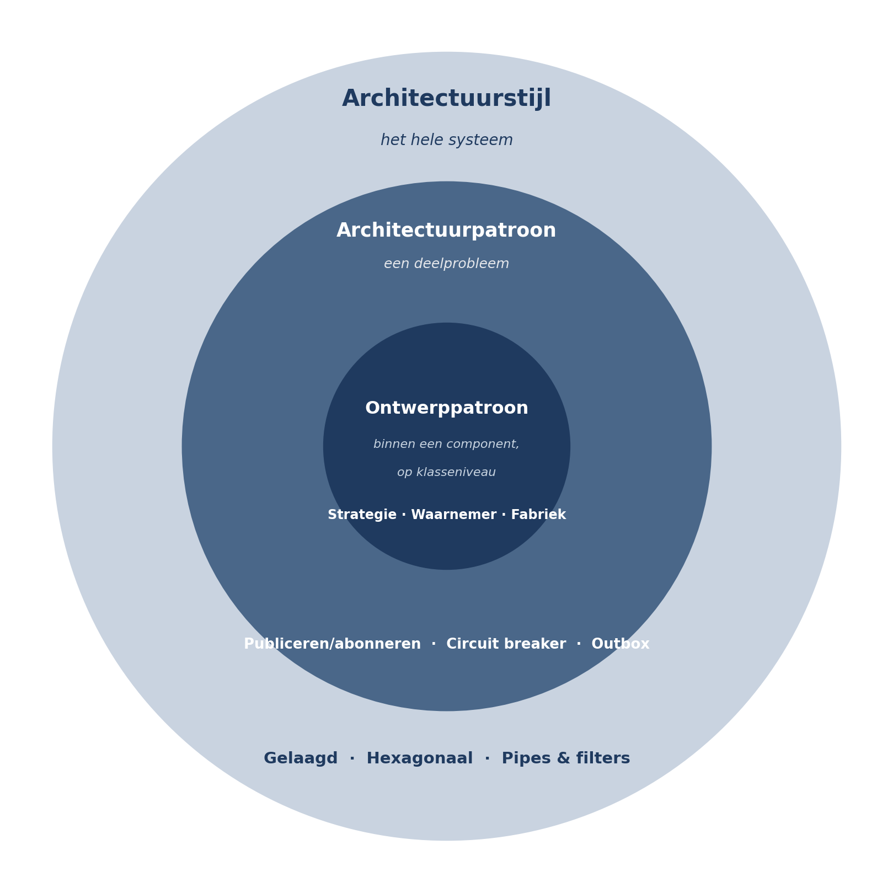

Deel 4 — Architectuurstijlen I
Deelnemersreader
Cursus Softwarearchitectuur · Niveau 1 (CPSA-F) · Deel 4 van 10
Positionering
Voorbereiding op iSAQB® CPSA-F. Geen vervanging van het officiële curriculum en examenmateriaal van het iSAQB. Technologieneutraal; arc42 + C4 als referentienotatie, Structurizr als referentietool. Zelfstandig leesbaar; kruisverwijzingen naar de Ductus-cursus Business & Enterprise Architectuur zijn aangeduid met ↗ EA.
Leerdoelen van dit deel
Na dit deel kunt u:
- uitleggen wat een architectuurstijl is, en hoe een stijl zich verhoudt tot een patroon en tot een referentiearchitectuur;
- de gelaagde stijl beschrijven, inclusief de varianten open/gesloten en de klassieke problemen ervan;
- de afhankelijkheidsomkering uitleggen die aan hexagonale architectuur ten grondslag ligt, en de stijl toepassen op een concreet systeem;
- pipes & filters herkennen en beoordelen wanneer die stijl passend is;
- een stijl beoordelen tegen kwaliteitsscenario’s in plaats van tegen voorkeur;
- stijlen combineren binnen één systeem en de grenzen van die combinatie benoemen;
- de eerste helft van bevinding B4 adresseren: waarom een stijlkeuze zonder afweging een probleem is.
Dekking CPSA-F: dit deel dekt de leerdoelen over architectuurstijlen en -patronen, hun eigenschappen en toepasselijkheid; deel 5 vervolgt met de distributiestijlen.
4.1 Wat is een architectuurstijl?
Een architectuurstijl is een beproefd, benoembaar bouwplan voor een systeem: een set componenttypen, een set toegestane relaties daartussen, en een reden waarom die opzet bepaalde kwaliteiten oplevert.
Het onderscheid met verwante begrippen is voor het examen en voor de praktijk nuttig:
| Begrip | Reikwijdte | Voorbeeld |
|---|---|---|
| Architectuurstijl | Het hele systeem; bepaalt de grondvorm | Gelaagd, hexagonaal, pipes & filters |
| Architectuurpatroon | Een terugkerend deelprobleem binnen een systeem | Publiceren/abonneren, circuit breaker, outbox |
| Ontwerppatroon | Binnen een component, op klasseniveau | Strategie, waarnemer, fabriek |
| Referentiearchitectuur | Een uitgewerkte, domeinspecifieke invulling | Een sectorreferentie voor pensioenuitvoering |
De grenzen zijn niet absoluut — sommige auteurs noemen gelaagd een patroon — en dat hoeft u niet te verontrusten. Wat telt is de reikwijdte: een stijl bepaalt de grondvorm van het geheel, een patroon lost een deelprobleem op, en u kunt binnen één stijl vele patronen gebruiken.
Wat een stijl u geeft. Drie dingen, in volgorde van belang:
- Een beproefde verdeling van verantwoordelijkheden. U hoeft de vragen uit deel 3 niet vanaf nul te beantwoorden.
- Voorspelbaarheid. Wie de stijl kent, kan uw systeem lezen. Dat is conceptual integrity in gestandaardiseerde vorm, en het is de reden dat een nieuwe ontwikkelaar in week één productief kan zijn.
- Een bekend gedragsprofiel. Van elke stijl is bekend welke kwaliteiten hij bevordert en welke hij bemoeilijkt. Dat maakt een keuze verdedigbaar in plaats van hoopvol.
Wat een stijl u niet geeft. Een oplossing voor uw probleem. Dit is de kern van bevinding B4 en van dit deel: een stijl is een antwoord op een bepaalde vraag, en hij helpt alleen als u die vraag ook echt hebt. Een stijl kiezen zonder de vraag te stellen, is het antwoord overnemen van iemand anders’ systeem.

4.2 Hoe u een stijl beoordeelt
Voordat we naar de stijlen kijken: het beoordelingskader. Gebruik het bij elke stijl in dit deel en het volgende.
Vier vragen:
- Welk probleem lost deze stijl op? Elke stijl is ontstaan als antwoord op een concrete moeilijkheid. Wie die moeilijkheid niet heeft, betaalt de prijs zonder de baat.
- Welke kwaliteiten bevordert hij, welke bemoeilijkt hij? Leg dat naast uw architectuurdrijvers uit deel 2.
- Welke randvoorwaarden veronderstelt hij? Teamgrootte, operationele volwassenheid, deploymogelijkheden, kennisniveau.
- Wat kost het als u het half doet? Dit is de vraag die vrijwel nooit gesteld wordt en die het meeste voorspelt. Sommige stijlen zijn genadig bij gedeeltelijke toepassing; andere zijn dan slechter dan geen stijl.
Vraag 4 verdient toelichting. Een gelaagde architectuur waarin drie van de dertig componenten de laagregels overtreden, werkt nog steeds redelijk. Een hexagonale architectuur waarin de domeinkern toch rechtstreeks de database aanroept, heeft alle kosten van de abstractie en geen enkele baat. Halfheid is niet evenredig: bij sommige stijlen is zij dodelijk.
4.3 De gelaagde stijl
Grondvorm. Componenten worden geordend in horizontale lagen. Elke laag biedt diensten aan de laag erboven en gebruikt diensten van de laag eronder. De klassieke indeling: presentatie, applicatielogica, domeinlogica, gegevenstoegang.
Het probleem dat hij oplost. Vermenging van technische verantwoordelijkheden. Zonder lagen komt SQL in schermcode terecht en zit schermlogica in gegevensverwerking; wijzigingen aan de ene kant slaan door naar de andere.
Open en gesloten lagen
Twee varianten, met wezenlijk verschillende gevolgen:
- Gesloten lagen — een laag mag uitsluitend de laag direct eronder aanroepen. Voordeel: elke laag is een echte isolatielaag, en een wijziging in de gegevenstoegang bereikt de presentatie nooit. Nadeel: doorgeefluikcomponenten. Een eenvoudige leesactie moet door alle lagen heen, waarbij tussenlagen niets toevoegen.
- Open lagen — een laag mag ook lagen overslaan. Voordeel: geen doorgeefluiken. Nadeel: de isolatie is weg. Zodra de presentatie de gegevenstoegang rechtstreeks mag aanroepen, kan een wijziging daar de presentatie breken — en u weet niet meer welke lagen echt isoleren.
Aanbeveling: kies bewust en leg het vast. Het meest voorkomende probleem is niet de keuze maar de afwezigheid ervan: teams beginnen gesloten, maken uitzonderingen zonder ze te benoemen, en houden na twee jaar een architectuur over waarvan niemand weet welke regels gelden. Dat is de conceptual-integrity-fout uit deel 3 in zijn meest voorkomende vorm.
Wat de stijl oplevert en kost
| Bevordert | Bemoeilijkt |
|---|---|
| Begrijpelijkheid — iedereen kent de stijl | Wijzigingen die alle lagen doorsnijden (nieuwe functie = alle lagen aanpassen) |
| Vervangbaarheid van technische onderdelen | Prestatie bij diepe stapels met veel vertaalslagen |
| Testbaarheid per laag | Domeinlogica blijft zelden zuiver: zij gaat leunen op de gegevenslaag |
| Verdeling van werk naar technische expertise | Verdeling van werk naar functionaliteit |
De twee klassieke problemen
Het architectuur-sinkhole-antipatroon. Een aanzienlijk deel van de verzoeken gaat door alle lagen zonder dat een tussenlaag iets toevoegt. Een leesverzoek voor een deelnemersadres passeert presentatie, applicatielogica, domeinlogica en gegevenstoegang, waarbij drie lagen niets anders doen dan doorgeven. Dat is niet fataal — de vuistregel is dat het bij een minderheid van de verzoeken hoort te blijven — maar wanneer het de meerderheid wordt, betaalt u een structuur die u niet gebruikt.
De omgekeerde afhankelijkheid van het domein. In de klassieke gelaagde opzet hangt de domeinlogica af van de gegevenstoegang, want die zit eronder. Dat betekent dat de kern van uw systeem — de reglementslogica van Meridiaan — afhankelijk is van de vraag hoe gegevens worden opgeslagen. Wilt u de opslag vervangen, dan raakt u het domein. Dat is precies verkeerd om: het domein verandert om reglementaire redenen, de opslag om technische, en de stabiele partij zou niet van de instabiele moeten afhangen.
Deze tweede constatering is het vertrekpunt van de volgende stijl.
↗ EA — Gelaagdheid komt op landschapsniveau terug als applicatielandschap-indeling (kanaal-, proces-, kernlaag). De problemen zijn dezelfde vorm in ander formaat: doorgeeflagen en een kernlaag die afhankelijk wordt van kanaalspecifieke keuzes.
4.4 Hexagonale architectuur (ports & adapters)
Grondvorm. De domeinlogica staat in het midden en hangt van niets af. Alles wat van buiten komt — gebruikersinterface, database, berichtenbus, externe systemen — bereikt het domein via poorten (contracten, gedefinieerd door het domein zelf) die door adapters worden ingevuld.
De sleutelgedachte is de afhankelijkheidsomkering. In de gelaagde stijl definieert de gegevenslaag hoe je gegevens opvraagt en past het domein zich daaraan aan. In de hexagonale stijl definieert het domein wat het nodig heeft — “geef mij de deelnemer met dit nummer” — en moet de adapter zich daaraan aanpassen. De pijl van de afhankelijkheid wijst naar binnen, altijd.

Aandrijvende en aangedreven kant. Poorten komen in twee soorten:
- Aandrijvend (primair) — de buitenwereld roept het domein aan. Voor Mutatie 2.0: het zelfbedieningsportaal, het behandelaarsscherm, de werkgeversbatch. Alle drie roepen dezelfde domeinbewerking aan (“dien mutatie in”), met verschillende adapters.
- Aangedreven (secundair) — het domein roept de buitenwereld aan, via een contract dat het domein zelf vaststelt. Voor Mutatie 2.0: de kernadministratie-integratie, de postcodedienst, de gebeurtenisopslag.
De aangedreven kant is waar de stijl zijn waarde bewijst. Het contract dat u in deel 3 schreef voor de integratiecomponent — een mutatie wordt uiteindelijk precies één keer doorgegeven, zonder één woord over SOAP — is exact een aangedreven poort. De hexagonale stijl is de systematische toepassing van information hiding op systeemniveau.
Wat de stijl oplevert en kost
| Bevordert | Bemoeilijkt |
|---|---|
| Vervangbaarheid van externe systemen — dient de “toekomstvast”-eis rechtstreeks | Begrijpelijkheid voor wie de stijl niet kent: veel indirectie |
| Testbaarheid: het domein is testbaar zonder database of externe diensten | Eenvoudige CRUD wordt onevenredig duur |
| Zuiverheid van de domeinlogica: reglementsregels op één plek, vrij van techniek | Verleiding tot abstracties zonder beslissing (deel 3) |
| Meerdere kanalen op dezelfde logica (portaal, scherm, batch) | Discipline: de stijl is niet genadig bij halfheid |
Waar het misgaat
Het domein lekt. Zodra het domeinmodel velden bevat die er alleen zijn omdat de database of het koppelvlak ze wil, is de omkering ongedaan gemaakt. Praktische toets: zou dit veld bestaan als we alles op papier deden? Zo nee, hoort het in een adapter.
Poorten die de buitenwereld beschrijven. Een poort die roepSoapDienstAan() heet, is geen poort. Het contract moet in domeintaal staan, met domeinbegrippen. Dit is dezelfde lektest als in deel 3.
Halfheid. Zoals bij vraag 4 van het beoordelingskader: een hexagonale opzet waarin de domeinkern toch rechtstreeks de database aanspreekt “omdat het hier even sneller was”, heeft alle indirectiekosten en geen enkele vervangbaarheidsbaat. Bij deze stijl is halfheid slechter dan het achterwege laten.
Onnodige toepassing. Voor een component dat gegevens opslaat en teruggeeft zonder regels — bijvoorbeeld het bewaren van voorkeursinstellingen — is de hexagonale opzet overhead. De stijl loont waar domeinlogica zit die het beschermen waard is.
De relatie met “clean” en “onion”
Clean architecture en onion architecture zijn verwante formuleringen van dezelfde omkering, met meer of andere ringen. Voor het examen en voor de praktijk volstaat het te weten dat ze dezelfde kerngedachte delen — afhankelijkheden wijzen naar binnen, het domein hangt van niets af — en dat de verschillen in het aantal en de naamgeving van de ringen zitten. Kies één vocabulaire in uw systeem en houd het vol; het door elkaar gebruiken van drie vocabulaires is een conceptual-integrity-probleem dat geen enkele winst oplevert.
4.5 Pipes & filters
Grondvorm. Verwerking wordt opgedeeld in onafhankelijke stappen (filters) die via kanalen (pipes) aan elkaar worden geknoopt. Elk filter kent alleen zijn invoer en uitvoer, niet zijn buren.
Het probleem dat hij oplost. Verwerking die van nature een keten is, en waarbij de stappen apart moeten kunnen worden gewijzigd, hergebruikt, geschaald of opnieuw uitgevoerd.
Toepassing in de casus. De nachtelijke werkgeversbatch is een schoolvoorbeeld: 4.000 mutaties die achtereenvolgens moeten worden ingelezen, ontdubbeld, formaatgecontroleerd, verrijkt met deelnemersgegevens, inhoudelijk gevalideerd, verwerkt en gerapporteerd.
| Bevordert | Bemoeilijkt |
|---|---|
| Wijzigbaarheid per stap; stappen toevoegen of vervangen | Verwerking waarin stappen elkaar nodig hebben of terug moeten grijpen |
| Herbruikbaarheid van filters | Foutafhandeling: waar hoort een fout in de keten, en wat gebeurt met de rest? |
| Schaalbaarheid: trage stappen apart parallelliseren | Transactionele samenhang over de hele keten |
| Testbaarheid per stap | Interactieve verwerking met korte antwoordtijden |
| Herstart vanaf een tussenpunt | Overzicht: de keten als geheel is nergens zichtbaar behalve in configuratie |
De belangrijkste ontwerpvraag in deze stijl is niet de indeling in stappen maar de foutstrategie. Wat gebeurt er met een batch van 4.000 waarvan er 12 ongeldig zijn? Drie mogelijkheden, met heel verschillende gevolgen:
- alles afwijzen (veilig, en operationeel onwerkbaar);
- de 12 apart zetten en 3.988 verwerken (werkbaar, vraagt een terugmeldproces);
- de 12 corrigeren en doorlaten (gevaarlijk zonder expliciet mandaat).
In Mutatie 1.0 was dit nooit besloten. Het gedrag was per stap verschillend, en toen in maand elf het foutgedrag van de gedeelde validatie werd aangescherpt, sloeg dat door naar de batch — die eerder overslak en nu afbrak. Dat is dezelfde gebeurtenis als in deel 3, nu vanuit stijlperspectief bekeken.
4.6 Stijlen combineren
Reële systemen gebruiken zelden één stijl. Dat is geen zwakte, mits de combinatie bewust is en de grenzen duidelijk.
Voor Mutatie 2.0 ligt de volgende combinatie voor de hand:
- Hexagonaal als hoofdstijl. De mutatielogica en de reglementsregels vormen de kern; portaal, behandelaarsscherm, werkgeversaanlevering, kernadministratie, postcodedienst en gebeurtenisopslag zijn adapters. Dit dient QS-2, de vervangbaarheidseis en — via testbaarheid — QS-1 en QS-3.
- Pipes & filters binnen de werkgeversbatch-adapter. De ketenverwerking van 4.000 mutaties is daar een natuurlijke vorm, en zij blijft binnen één adapter: de domeinkern merkt er niets van.
- Gelaagdheid binnen componenten. Binnen de portaaladapter is een laagindeling prima en gebruikelijk. De hoofdindeling is zij niet — dat was de conclusie van deel 3.
Regel voor combineren: een stijl mag binnen een component van een andere stijl leven, maar niet ernaast op hetzelfde niveau. Twee hoofdstijlen naast elkaar op systeemniveau levert twee onverenigbare mentale modellen op, en dan moet iedereen bij elke wijziging eerst uitzoeken in welk deel van het systeem hij zit. Dat is precies het verlies aan conceptual integrity uit deel 3.
Vastleggen. Welke stijl waar geldt, hoort in de architectuurdocumentatie (arc42 hoofdstuk 5 en 8) en de keuze zelf in een ADR. Deel 7 werkt dat uit.
4.7 De stijlkeuze voor Mutatie 2.0, beredeneerd
Loop de vier vragen uit 4.2 langs voor de hoofdstijl.
1. Welk probleem lossen we op? De reglementslogica moet vier jaar meegaan terwijl de kernadministratie mogelijk wordt vervangen, drie verschillende kanalen dezelfde mutatielogica moeten gebruiken, en het domein testbaar moet zijn zonder de trage, gelimiteerde externe systemen.
2. Kwaliteiten tegen de drijvers.
| Drijver | Gelaagd | Hexagonaal |
|---|---|---|
| QS-1 bevestiging < 2 sec | Neutraal | Neutraal tot licht positief (geen synchrone afhankelijkheid nodig) |
| QS-2 doorwerken bij storing | Zwak — de gegevenslaag dicteert het gedrag | Sterk — de poort belegt de belofte, de adapter vangt de storing |
| QS-3 nieuwe mutatiesoort in 10 dagen | Zwak — snijdt alle lagen | Sterk, mits het domein per mutatiesoort is ingedeeld |
| QS-4 zeven jaar reconstrueerbaar | Neutraal | Positief — gebeurtenisopslag is een aangedreven poort |
3. Randvoorwaarden. Twee teams, geen groei (deel 2). Dat is voldoende voor hexagonaal, dat geen operationele complexiteit toevoegt. Het kennisniveau vraagt aandacht: de stijl is niet moeilijk maar wel ongewoon, en halfheid is duur — dus scholing en reviewpraktijk zijn onderdeel van de keuze, geen bijzaak.
4. Wat kost halfheid? Veel. Dit is het serieuze bezwaar tegen deze keuze en het hoort in de ADR te staan, samen met de maatregel: een expliciete regel dat de domeinkern geen enkele afhankelijkheid naar buiten heeft, en een controle daarop in de reviewpraktijk. In niveau 2 wordt dat een geautomatiseerde fitness function (deel 17).
Conclusie. Hexagonaal als hoofdstijl, met pipes & filters binnen de batchadapter en gelaagdheid binnen componenten. Dat is een verdedigbare keuze — niet omdat de stijl modern is, maar omdat drie van de vier drijvers erdoor gediend worden en de vierde er niet onder lijdt.
Wat deze conclusie nog niet is. Zij zegt niets over hoe het systeem wordt gedeployd: als één applicatie, als een handvol, of als elf services. Die vraag staat los van de stijlkeuze en wordt in deel 5 behandeld. In Mutatie 1.0 zijn beide vragen door elkaar gehaald — er is een distributiebeslissing genomen (elf services) die als structuurbeslissing werd gepresenteerd. Dat is de tweede helft van B4.
Samenvatting
- Een architectuurstijl is een beproefd bouwplan: componenttypen, toegestane relaties, en een bekend gedragsprofiel. Hij geeft u een verdeling van verantwoordelijkheden, voorspelbaarheid en verdedigbaarheid — geen oplossing voor uw probleem.
- Beoordeel elke stijl met vier vragen: welk probleem lost hij op, welke kwaliteiten bevordert en bemoeilijkt hij, welke randvoorwaarden veronderstelt hij, en wat kost halfheid.
- De gelaagde stijl is begrijpelijk en universeel bekend, maar maakt functionele wijzigingen duur en laat het domein afhangen van de opslag. Kies bewust tussen open en gesloten lagen en leg de keuze vast.
- Hexagonale architectuur keert die afhankelijkheid om: het domein definieert poorten, adapters vullen ze in, alle afhankelijkheden wijzen naar binnen. Dit is information hiding op systeemniveau. De stijl is niet genadig bij halfheid.
- Pipes & filters past bij ketenverwerking. De beslissende ontwerpvraag is niet de stapindeling maar de foutstrategie.
- Stijlen combineren mag: een stijl binnen een component van een andere stijl. Twee hoofdstijlen naast elkaar op systeemniveau kost conceptual integrity.
- Een stijlkeuze zegt niets over distributie. Die vraag is deel 5.
Kernbegrippen
Architectuurstijl — beproefd bouwplan voor het geheel: componenttypen, toegestane relaties, bekend gedragsprofiel.
Gesloten / open laag — een laag die uitsluitend de laag direct eronder mag aanroepen, respectievelijk lagen mag overslaan.
Architectuur-sinkhole — het antipatroon waarin de meerderheid van de verzoeken lagen passeert zonder dat die iets toevoegen.
Poort (port) — een contract dat door de domeinkern wordt gedefinieerd; aandrijvend als de buitenwereld het domein aanroept, aangedreven als het domein de buitenwereld aanroept.
Adapter — de invulling van een poort met een concrete technologie of kanaal.
Afhankelijkheidsomkering op systeemniveau — het principe dat de stabiele domeinkern niet afhangt van de instabiele buitenwereld, maar omgekeerd.
Filter / pipe — een onafhankelijke verwerkingsstap, respectievelijk het kanaal dat stappen verbindt.
Verder lezen
- iSAQB, Curriculum CPSA-Foundation Level — hoofdstuk 4.
- Cockburn, Hexagonal Architecture — het oorspronkelijke, korte stuk.
- Richards & Ford, Fundamentals of Software Architecture — de hoofdstukken over layered en pipeline architecture, inclusief de sinkhole-bespreking.
- Buschmann e.a., Pattern-Oriented Software Architecture, deel 1 — de klassieke bron voor lagen en pipes & filters.
- Martin, Clean Architecture — deel V; lees het als variant op dezelfde omkering.
Ductus B.V. · Cursus Softwarearchitectuur · Niveau 1, deel 4 · Deelnemersreader